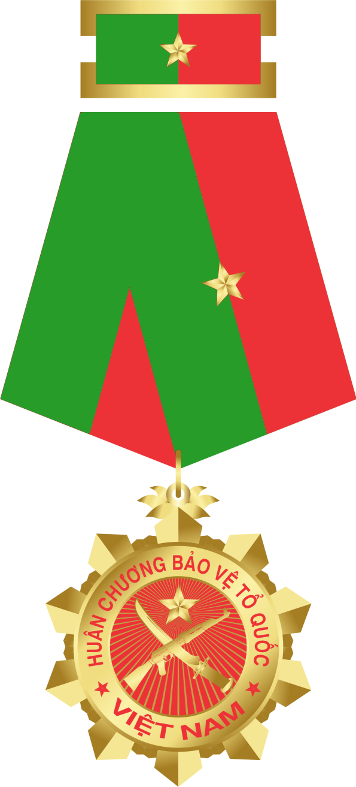
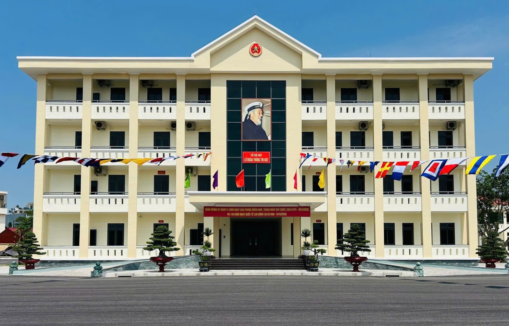

LỮ ĐOÀN
THÔNG TIN 602
THÔNG TIN 602


"Kịp thời - Chính xác - Bí mật - An toàn"


Số 267, Lê Hồng Phong, Hải An, Hải Phòng
🗺 Mở Google Maps
Sở chỉ huy Lữ đoàn 602
• Đ/c Hà Văn Tường - Phó Chủ nhiệm Chính trị (SĐT: 0868.377.308)
• Đ/c Nguyễn Đình Rĩnh - Cán bộ, Chính sách (SĐT: 0972.514.685)